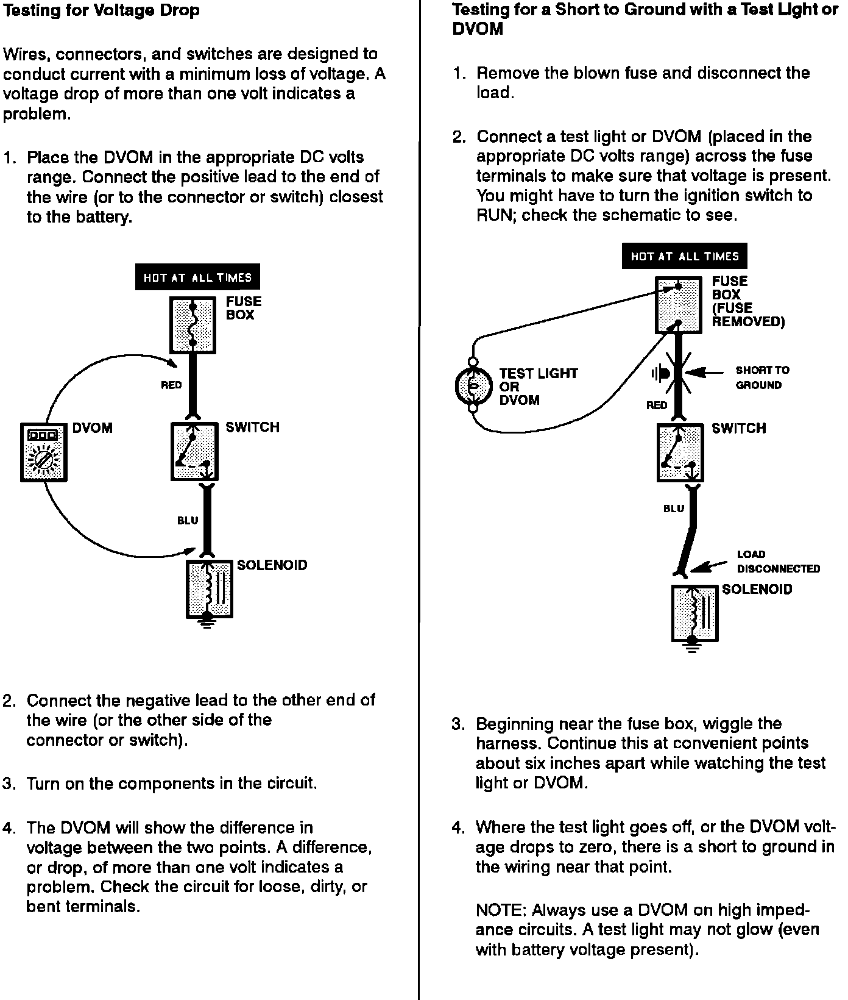

Operation CHARM
: Car repair manuals for everyone.
Home
>>
Acura
>>
1990
>>
Legend Sedan V6-2675cc 2.7L SOHC FI
>>
Repair and Diagnosis
>>
Powertrain Management
>>
Transmission Control Systems
>>
Lamps and Indicators - Transmission and Drivetrain
>>
Lamps and Indicators - A/T
>>
Shift Indicator - A/T
>>
Diagrams
>>
Diagnostic Aids
>>
Troubleshooting Tests
>>
Testing For Voltage Drop/Short to Ground With Test Light/DVOM
Testing For Voltage Drop/Short to Ground With Test Light/DVOM
Troubleshooting Tests: Testing For Voltage Drop And Testing For A Short To Ground With A Test Light Or DVOM:
